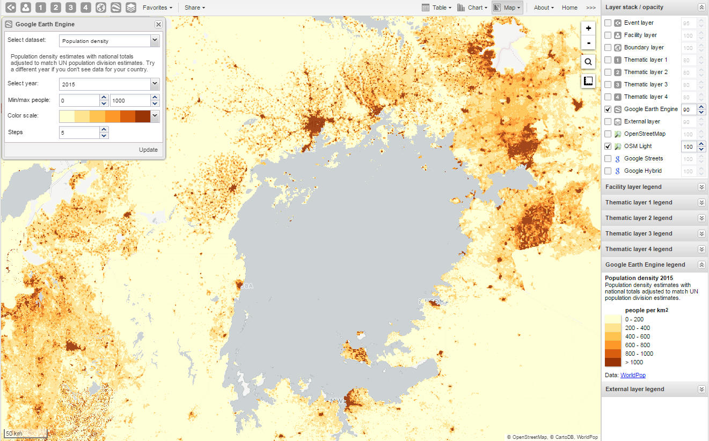
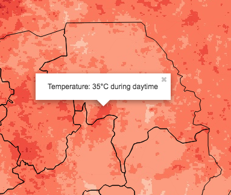

|  |
The Google Earth Engine layer lets you display satellite imagery and geospatial datasets from Google's vast catalog. This layer is useful in combination with thematic and event layers to enhance analysis. The following layers are supported:
Elevation: Metres above sea level
Nighttime lights: Lights from cities, towns, and other sites with persistent lighting, including gas flares (from 2013)
Population density: Population in 100 x 100 m grid cells (from 2010)
Temperature, population and land cover at any location.
Right-click on the layers to view more information, for example temperature and elevation.
|  |
In the top menu, click the Google Earth Engine layer icon.
Select a data set, for example "Elevation".
Select Min / max value.
The meaning of these values depend on which data set you've selected.
Select a Color scale.
Select the number of Steps.
The number of steps means the number of distinct colors in the color scale.
Click Update.